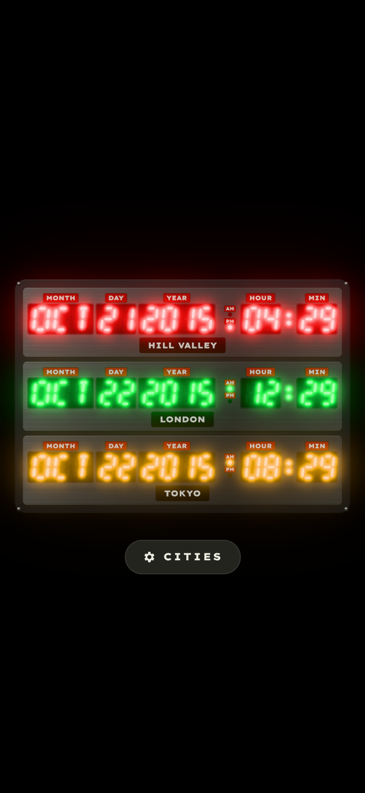

Time Circuits · Web
Architecture of the three.js port of bttfclock
three.js r186
ES modules · no build
WebGL 2 · HDR bloom
53 node:test tests


Slot 0 · Destination · New York
Slot 1 · Present · London
Slot 2 · Last departed · Hong Kong
Module map
The pure layers (models and services) have no DOM or three.js dependency and are tested directly in Node. The scene is a thin consumer of their output.
graph TD HTML["index.html
import map · fonts · canvas · dialog"] --> MAIN["main.js
bootstrap + timing"] MAIN --> LA["services/launchArgs.js
?frozendate ?cities ?settings ?notilt"] MAIN --> STORE["services/cityStore.js
3-city cap · localStorage"] MAIN --> CLOCK["services/clock.js
ClockModel · isColonLit"] MAIN --> PANEL["ui/settingsPanel.js
<dialog>"] MAIN --> TILT["ui/tilt.js
pointer · deviceorientation"] MAIN -->|dynamic import| SCENE["scene/timeCircuitsScene.js"] STORE --> CAT["models/cityCatalog.js
40 cities"] CLOCK --> TR["models/timeReadout.js
Intl.DateTimeFormat"] SCENE --> LAYOUT["models/layout.js
natural-point rects"] SCENE --> GEO["models/segmentGeometry.js
hexagon polygons"] SCENE --> MAPS["models/segmentMaps.js
bitmasks"] SCENE --> RC["models/rowColor.js · palette.js"] SCENE --> TEX["scene/textures.js
canvas textures"] SCENE --> THREE["three.js + addons
(CDN)"] TILT --> SCENE PANEL --> STORE
Arrows mean "imports" or "drives". Everything under models/ is pure.
Timing and data flow
No 60 Hz loop runs. A single timeout lands on every wall-clock half-second. It flips the colon and recomputes readouts only when the minute changes. Rendering is coalesced into one requestAnimationFrame per change.
graph TD T["setTimeout(500 - now % 500)
half-second boundary"] --> C["isColonLit(now)"] C --> SC["scene.setColonLit()"] T --> MK{"minute key changed?"} MK -->|no| IDLE["nothing"] MK -->|yes| RO["ClockModel.readouts(cities)"] RO --> SR["scene.setReadouts()"] SR --> GC["per char: mask changed?
swap geometry from glyph cache"] VIS["visibilitychange → visible"] --> RO ST["CityStore.subscribe()"] --> SET["scene.setCities() → rebuild model"] SET --> RO SC --> RR["requestRender()"] GC --> RR SET --> RR TI["tilt target / resize"] --> RR RR --> RAF["one rAF"] RAF --> EASE["ease tilt"] EASE --> COMP["composer.render()"] EASE -->|still easing| RR
A steady clock renders two frames per second. Moving the mouse renders until the tilt settles.
Render pipeline: selective bloom from one HDR pass
graph TD SCN["Scene
LED materials: lit colour normalised to luminance 2.0
chrome, panels, text: below 0.8"] --> RP["RenderPass
HalfFloat target · 4× MSAA"] RP --> UB["UnrealBloomPass
threshold 0.8 · strength 0.7
mip weights 0.7 / 0.4 / 0.12 / 0.02 / 0"] UB --> OP["OutputPass
NeutralToneMapping + sRGB"] OP --> CANVAS["canvas"]
Only values above the threshold bloom, and only the LEDs are that bright. The tone mapper whitens the hot core (the app's litCore) while the bloom keeps the row colour (the app's bloom shadows).
Scene graph
graph TD S["THREE.Scene
RoomEnvironment (PMREM) + key light"] --> RIG["rig (Group)
rotation = tilt"] RIG --> ENC["Enclosure slab
extruded rounded rect r=14"] RIG --> RIV["4 × rivet domes"] RIG --> ROW["× rows (0–3)"] ROW --> PAN["Row panel
brushed-metal slab r=5"] ROW --> FLD["× 5 fields"] FLD --> GEL["display gel plane"] FLD --> BEZ["bezel (extruded frame with hole)"] FLD --> GLS["glass plane (additive reflection)"] FLD --> CAP["caption plate (canvas)"] FLD --> LIT["lit glyph mesh per char"] ROW --> GHO["ghost segments
one merged ShapeGeometry"] ROW --> AMP["AM / PM plates + lamp domes"] ROW --> COL["2 colon domes"] ROW --> CITY["city plate (canvas)"]
About 30 meshes per row. Lit segments share cached geometries keyed by (7 or 14, mask).
Depth stack (z, in points)
| z | Element | Material |
|---|---|---|
| 0 | Enclosure front face | Standard, dark brushed-metal map |
| 1.6 | Row panel front face | Standard, light brushed-metal map |
| +0.05 | Display gel | Basic, vertical tint gradient |
| +0.10 | Ghost segments, lamp domes | Basic, ghost |
| +0.15 | Lit segments | Basic, HDR lit |
| +0.35 | Caption, AM/PM and city plates | Basic + canvas texture |
| +1.1 | Bezel top and glass | Black standard / additive reflection |
Layout in natural points
models/layout.js reproduces the SwiftUI HStack arithmetic, and the scene uses those numbers directly as world units. One row is 358.52 × 71 points (row aspect ≈ 5.05). The camera then fits the whole enclosure to the viewport, which is the 3D equivalent of the app's per-row .scaleEffect.
| Constant | Value | Meaning |
|---|---|---|
| digitHeight | 28 | LED character height |
| sevenSegAspect / fourteenSegAspect | 0.58 / 0.68 | Character box width ÷ height |
| thicknessRatio · italicSkew | 0.18 · 0.10 | Bar thickness · right lean |
| charGap · fieldGap · dateTimeGap | 5 · 4 · 9 | Spacing |
| amPmWidth · colonWidth | 18 · 12 | Indicator columns |
| caption · window padding | 11 tall · 4h/3v | DYMO plate · LED inset |
Settings flow
graph TD BTN["CITIES button / , key / ?settings"] --> OPEN["SettingsPanel.open()
dialog.showModal()"] OPEN --> UI["▲ ▼ ✕ per row · search · add · reset"] UI --> MUT["CityStore.move / removeAt / add / resetToDefaults"] MUT --> PERSIST["localStorage
bttfclock.selectedCityIds.v1"] MUT --> NOTIFY["subscribers"] NOTIFY --> REB["scene.setCities() + readouts"] NOTIFY --> RER["panel.render()"]